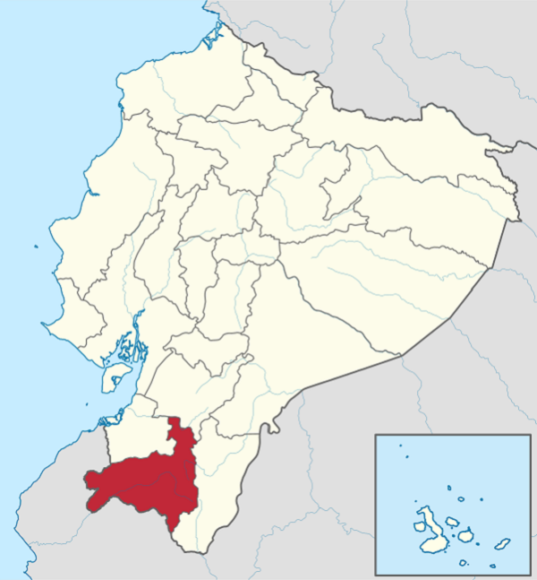

Su capital administrativa es la ciudad de Loja, la cual además es su urbe más grande y poblada. Ocupa un territorio de unos 11 066 km², siendo la novena provincia del país por extensión.
Limita con las provincia de El Oro al noroeste; con la provincia de Zamora Chinchipe al este; con la provincia del Azuay al norte; al sur con las provincias peruanas de Sullana y Ayabaca y al oeste con las provincias de Zarumilla y Tumbes, también pertenecientes al Perú.
En el territorio lojano habitan 511 184 personas, según el último censo nacional (2010), siendo la décima provincia más poblada del país.
La Provincia de Loja está constituida por 16 cantones, de las cuales se derivan sus respectivas parroquias urbanas y rurales. Según el último ordenamiento territorial, la provincia de Loja pertenecerá a una región comprendida también por las provincias de El Oro y Zamora Chinchipe, aunque no esté oficialmente conformada, denominada Región Sur.
Es uno de los más importantes centros administrativos, económicos, financieros y comerciales del sur de Ecuador. El desarrollo de la industria en la provincia, en general se basó en las destrezas manuales de sus habitantes. Tiene una importancia muy singular para la historia del sur del Ecuador , por ser un punto medio entre la costa y la amazonía, desde tiempo ancestral se constituyó como una zona de encuentro entre culturas, comerciantes y eventos de connotación religiosa.
Tuvo distintos períodos migratorios provenientes de la serranía como los paltas y malacatos. Más adelante fue conquistada por los incas al mando de Túpac Yupanqui. La colonización española se dio cuando se levantó en 1546, la ciudad de Loja con el nombre de La Zarza, bajo orden del Gonzalo Pizarro; durante ese período la entidad máxima y precursora de la provincia sería la Corregimiento de Loja. Después de la guerra independentista y la anexión de Ecuador a la Gran Colombia, se crea la Provincia de Loja, una de las 7 primeras provincias del Ecuador.
En la parte alta de la provincia se pueden encontrar características propias de la región andina y en la parte baja se encuentran características propias de la Costa y el Perú; de los 16 cantones que conforman el territorio provincial 13 pertenecen al régimen Costa y 3 al régimen sierra.
